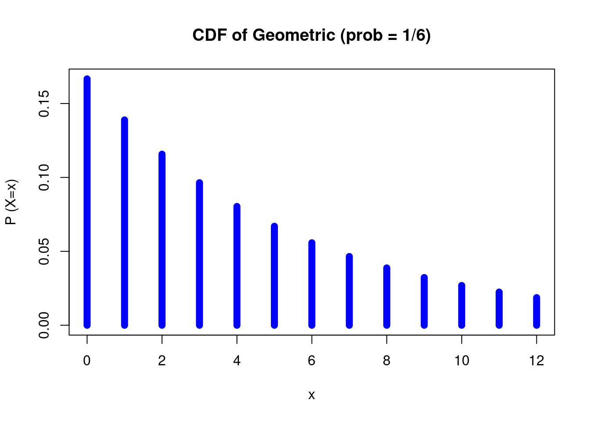
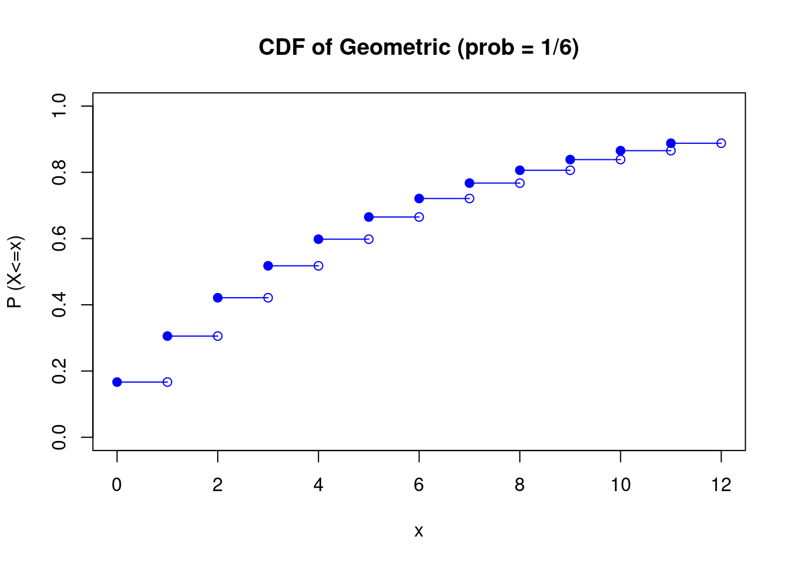

Chapter 4 Diskrete Wahrscheinlichkeitsverteilungen
Eine Wahrscheinlichkeitsverteilung heißt eine diskrete Wahrscheinlichkeitsverteilung, wenn einer der folgenden drei Fälle gilt:
- Sie ist auf einer endlichen Menge definiert (\({\displaystyle \{0,1,2,\dots ,n\}})\).
- Sie ist auf einer abzählbar unendlichen Menge definiert (meist die natürlichen Zahlen \(\mathbb{N}\) ).
- Sie ist auf einer beliebigen Menge definiert, nimmt aber nur auf höchstens abzählbar vielen Elementen dieser Menge einen positiven Wert an. Das bedeutet, es existiert eine höchstens abzählbare Menge \(M\) mit \({\displaystyle P(M)=1}\) (meist die natürlichen Zahlen, eingebettet in die reellen Zahlen).
4.1 Wahrscheinlichkeitsverteilungen in R
R nutzt standatisierte Präfixe, um verschiedene Verteilungseigenschaften abzufragen:
| Präfix | Bedeutung | Math. Ausdruck |
|---|---|---|
d |
Probability density function (PDF) | \(P(X=x)\) |
p |
Cumulative distribution function (CDF) | \(P(X \leq x)\) |
q |
Quantile function | Given \(p\), the smallest \(x\) such that \(P(X\leq x) > p\) |
q gibt also das Invers der CDF (\(P(X\leq x)\)) und damit für eine entsprechende Wahrscheinlichkeit \(p\) dasjenige \(x\), sodass die Wkt., dass \(X\leq x\) gleich \(p\) ist.
4.2 Bernoulli-Verteilung
Zufallsgrößen mit einer Bernoulli-Verteilung (auch als Null-Eins-Verteilung, Boole-Verteilung bezeichnet) benutzt man zur Beschreibung von zufälligen Ereignissen, bei denen es nur zwei mögliche Versuchsausgänge (Erfolg/Misserfolg) gibt.
Die zugehörige Wahrscheinlichkeit \(p\) für einen Erfolg nennt man Erfolgswahrscheinlichkeit und \(q = 1 − p\) die Wahrscheinlichkeit eines Misserfolgs.
Beispiele:
- Werfen einer Münze: Kopf (Erfolg), \(p=1/2\), und Zahl (Misserfolg), \(q=1/2\).
- Werfen eines Würfels, wobei nur eine „6“ als Erfolg gewertet wird: \(p=1/6\), \(q=5/6\).
Definition: Eine diskrete Zufallsgröße \(X\) mit Werten in der Menge \(\{0,1\}\) unterliegt der Null-Eins-Verteilung mit dem Parameter \(p\in [0,1]\), wenn sie der folgenden Wahrscheinlichkeitsfunktion folgt:
\[ {\displaystyle f(x\mid p)={\begin{cases}p^{x}(1-p)^{1-x}&{\text{falls}}\quad x=0,1\\0&{\text{sonst.}}\end{cases}}} \]
Die Verteilungsfunktion ist dann \[ {\displaystyle F_{X}(x)={\begin{cases}0&{\text{ falls }}\quad x<0\\1-p&{\text{ falls }}\quad 0\leq x<1\\1&{\text{ falls }}\quad x\geq 1\end{cases}}}. \]
Man schreibt dann \({\displaystyle X\sim {\mathcal {B}}(p)}\) oder \(X\sim Ber_{p}\).
Eine Reihe von unabhängigen identischen Versuchen, bei der jeder Einzelversuch der Bernoulli-Verteilung genügt, wird Bernoulli-Prozess oder bernoullisches Versuchsschema genannt.
Erwartungswert: \(\;\;\;\,{E}\left(X\right)=p\) Varianz: \(\qquad \qquad {V}\left(X\right)=pq\)
4.3 Binominalverteilung
Die Binomialverteilung beschreibt die Anzahl der Erfolge in einem Bernoulli-Prozess, also einer Serie von gleichartigen und unabhängigen Versuchen, die jeweils genau zwei mögliche Ergebnisse haben („Erfolg“ oder „Misserfolg“).
4.4 Geometrische Verteilung
Die geometrische Verteilung ist univariat und wird aus unabhängigen Bernoulli-Experimenten abgeleitet und in zwei Varianten definiert:
- Variante 1: Die Wahrscheinlichkeitsverteilung der Anzahl \(X\) der Bernoulli-Versuche, die notwendig sind, um einen Erfolg zu haben (definiert auf der Menge \(\mathbb {N}\)).
- Variante 2: Die Wahrscheinlichkeitsverteilung der Anzahl \(Y\) der Fehlversuche vor dem ersten Erfolg. Diese Verteilung ist auf der Menge \(\mathbb {N} _{0}\) definiert.
Die beiden Varianten stehen in der Beziehung \(X=Y+1\).
Beispiele:
- Wartezeiten bis zum Eintreffen eines bestimmten Ereignisses.
- Lebensdauerbestimmung von Geräten und Bauteilen, d. h. dem Warten bis zum ersten Ausfall.
Definition: Eine diskrete Zufallsgröße \(X\) oder \(Y\) mit dem Parameter \(p\) (Wahrscheinlichkeit für einen Erfolg), \(q=1-p\) (Wahrscheinlichkeit für einen Misserfolg) genügt der geometrischen Verteilung \(G(p)\), wenn:
Variante A: Für die Wahrscheinlichkeit, dass man genau \(n\) Versuche benötigt, um zum ersten Erfolg zu kommen, gilt \({\displaystyle \operatorname {P} (X=n)=p(1-p)^{n-1}=pq^{n-1}\quad (n=1,2,\dotsc )}\).
Variante B: Für die Wahrscheinlichkeit, \(n\) Fehlversuche vor dem ersten Erfolg zu haben, gilt \(\operatorname {P}(Y=n)=p(1-p)^{{n}}=pq^{{n}}\quad (n=0,1,2,\dotsc )\).
Verteilungsfunktion:
Variante A: \({\displaystyle F(n)=\operatorname {P} (X\leq n)=p\sum _{i=1}^{n}q^{i-1}=p\sum _{i=0}^{n-1}q^{i}=p{\frac {1-q^{n}}{1-q}}=1-q^{n}=1-(1-p)^{n}}\)
Variante B: \({\displaystyle F(n)=\operatorname {P} (Y\leq n)=p\sum _{i=0}^{n}q^{i}=p{\frac {1-q^{n+1}}{1-q}}=1-q^{n+1}=1-(1-p)^{n+1}}\)
Erwartungswert: Variante A: \(\operatorname {E}(X)={\frac {1}{p}}\) Variante B: \(\operatorname {E}(Y)=\operatorname {E}(X)-1={\frac {1-p}{p}}\).
Varianz: Die Varianzen der beiden geometrischen Verteilungen sind \(\operatorname {Var}(X)=\operatorname {Var}(Y)={\frac {1-p}{p^{2}}}={\frac {1}{p^{{2}}}}-{\frac {1}{p}}\)
Gedächtnislosigkeit: Die geometrische Verteilung ist eine gedächtnislose Verteilung, d. h., es gilt für
- Variante A: \(\operatorname {P}(X=n+k\,|\,X>n)=\operatorname {P}(X=k)\quad n,k=1,2,\dotsc\)
- Variante B: \(\operatorname {P}(Y=n+k\,|\,Y\geq n)=\operatorname {P}(Y=k)\quad n,k=0,1,2,\dotsc\)
Ist also von einer geometrisch verteilten Zufallsvariablen bekannt, dass sie größer als der Wert \(n\) ist (Variante A) bzw. mindestens den Wert \(n\) hat (Variante B), so ist die Wahrscheinlichkeit, dass sie diesen Wert um \(k\) übertrifft, genau so groß wie die, dass eine identische Zufallsvariable überhaupt den Wert \(k\) annimmt.
Die Gedächtnislosigkeit ist eine definierende Eigenschaft; die geometrische Verteilung ist also die einzig mögliche gedächtnislose diskrete Verteilung. Ihr stetiges Pendant hierbei ist die Exponentialverteilung.
Beispiel in R: Wie oft muss ich beim Mensch-ärgere-dich-nicht-Spiel auf die erste Sechs warten? Dieses Warten auf das erstmalige Eintreten eines bestimmten Ereignisses, d.h. das „Warten auf den ersten Erfolg“, lässt sich mathematisch durch die zufällige Anzahl \(X\) von BERNOULLI-Experimenten mit der Erfolgswahrscheinlichkeit \(p\) beschreiben.
- Die Wahrscheinlichkeit, dass ich genau 4 Versuche benötige bzw. 3 Mal warten muss (d.h. einen Misserfolg habe), ist:
dgeom(x = 3, prob = 1/6, log = FALSE)## [1] 0.09645062- Entsprechend ergibt sich für die Wartenzeiten 0 bis 10 dann folgendes Bild:
x <- 0:12 # Choose the sample space (here, it's 0,1,2,...,10)
p_x <- dgeom(x = x, prob = 1/6) # compute the shape of the distribution
plot(x, p_x, type="h", xlim=c(0,12), ylim=c(0,max(p_x)), # Plot the Geometric probability dist
lwd=8, col="blue",ylab="P (X=x)")
title("CDF of Geometric (prob = 1/6)")
- Um nun die Wahrscheinlichkeit zu finden, dass man höchstens drei Mal warten muss – also maximal vier Mal würfelt bevor man die \(6\) erhält – braucht man die CDF (
pgeom).
- Die entsprechende Wahrscheinlichkeit ist:
pgeom(q = 3, prob = 1/6)## [1] 0.5177469- Für die Fälle, dass die Wartezeit kleiner bzw. gleich 0, 1, … ist, ergibt sich dann folgendes Bild:
x <- 0:12 # choose the sample space (here, it's 0,1,2,...,10)
Fx <- pgeom(q = x, prob = 1/6) # compute the shape of the distribution
n <- length(x)
plot(x = NA, y = NA, pch = NA, xlim = c(0, max(x)), ylim = c(0, 1),
xlab = "x", ylab = "P (X<=x)", main = "CDF of Geometric (prob = 1/6)")
points(x = x[-n], y = Fx[-n], pch=19, col = "blue")
points(x = x[-1], y = Fx[-n], pch=1, col = "blue")
for(i in 1:(n-1)) points(x=x[i+0:1], y=Fx[c(i,i)], type="l", col = "blue")